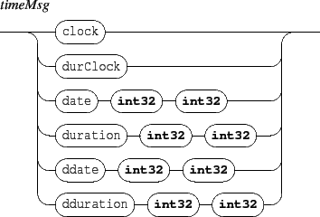

Next: 6.4 The 'grid' object
Up: 6. Type specific messages
Previous: 6.2 Width and height
Contents
Index
6.3 Symbolic score management
Messages accepted by the components types gmn | gmnf.

- page: set the score current page
- dpage: moves the score current page
- pageFormat: set the page format. The parameters are the page width and height. Note that the message has no effect when the score already includes a
\pageformat tag.
- columns: for multi pages display: set the number of columns.
- rows: for multi pages display: set the number of rows.
- pageCount: a read only attribute, gives the score pages count.
EXAMPLE
Displaying a multi-pages score on two pages starting at page 3:
/ITL/scene/myScore columns 2
/ITL/scene/myScore page 3
|
Grame - INScore project